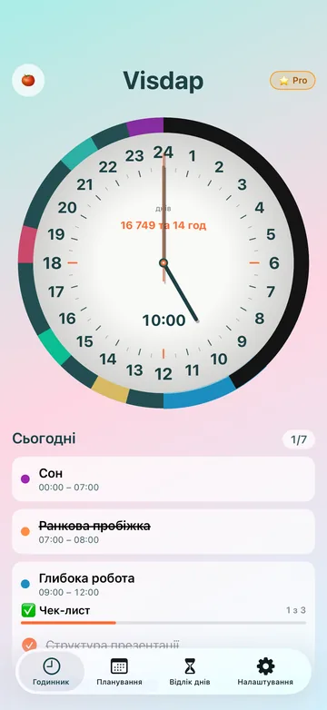
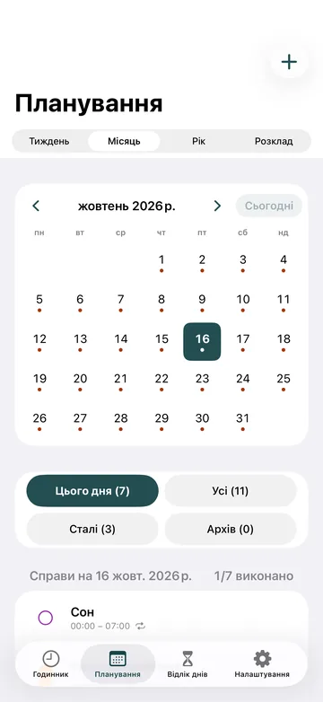
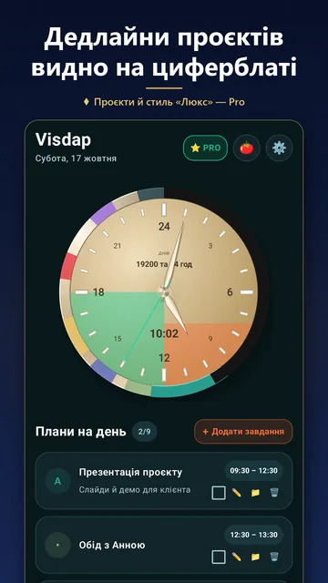
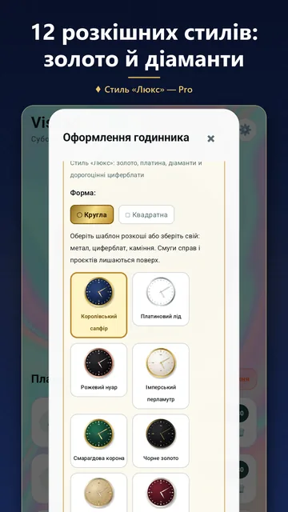
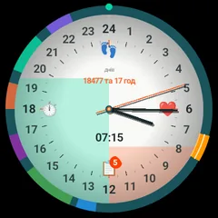
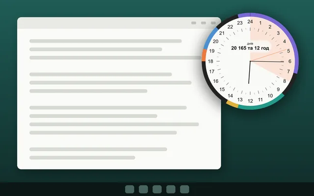

Для журналістів і блогерів
Visdap для преси
Усе, щоб написати про Visdap: головні факти, опис, який можна скопіювати, і справжні зображення з програми.
Коротко про програму
- Назва
- Visdap: Visual Day Planner
- Розробник
- Woder, незалежний розробник
- Платформи
- Android 8.0 і новіші, годинники Wear OS у парі з Android-телефоном, Windows 10 (версія 1809 і новіші) та Windows 11
- Ціна
- Почати можна безкоштовно. Pro — місячна або річна підписка; ціну показує кожен магазин.
- Мови
- Українською, англійською, німецькою, іспанською та французькою.
- Приватність
- Без облікового запису, реклами й аналітики. Плани зберігаються на пристрої.
- Контакт для преси
- oleksandr.miletskyi@gmail.com
Одним реченням
Visdap — візуальний планер, який показує весь день кольоровими секторами на 24-годинному циферблаті: у програмі, у віджетах Android, на годиннику Wear OS і на робочому столі Windows.
Опис
Visdap перетворює план дня на годинник. Кожна справа стає кольоровим сектором на 24-годинному циферблаті, тож сон, робота, навчання й час із родиною вміщаються на одному колі. Стрілка показує поточну мить, а частину дня, що вже минула, можна затемнити — так легко побачити, скільки часу лишилося.
На Android циферблат і список справ живуть у віджетах на головному екрані; на Wear OS справи на сьогодні видно на годиннику, з плиткою й ускладненнями; на Windows циферблат стоїть на робочому столі й може бути поверх інших вікон. Visdap не потребує облікового запису й не показує реклами. Почати можна безкоштовно, а підписка Pro додає необмежені справи, проєкти з дедлайнами, повторювані справи й помодоро.
Головні функції
24-годинний годинник
Увесь день на одному циферблаті, без плутанини з AM/PM. Коло чи квадрат, арабські чи римські цифри.
Віджети
24-годинний годинник і список справ на головному екрані Android; у Windows циферблат стоїть на робочому столі.
Нагадування, які чути
Гучні нагадування зі звуком і відкладанням — точно вчасно.
Плануйте дні
Календар на місяць і рік, пріоритети S/A/B/C і чек-листи для кожної справи.
Проєкти й дедлайни
До 20 проєктів. Смуги дедлайнів щодня ростуть на циферблаті, до 4 одночасно.
Помодоро з журналом
25 хвилин зосередженої роботи, потім перерва. Кожна сесія зараховується проєкту з короткою нотаткою.
Зображення
Знімки програми для Android, такі самі, як у Google Play. Відкрийте зображення, щоб зберегти його в повному розмірі.
- Іконка програми

План на сьогодні на 24-годинному циферблаті
Планер: тиждень, місяць і рік
Залишок днів і проєкти з дедлайнами
Стилі циферблата
Wear OS
Комп'ютер з Windows


Ці зображення можна використовувати в статтях і оглядах про Visdap. Будь ласка, не змінюйте й не перемальовуйте іконку.
Контакт
Питання чи запит на інтерв'ю? Напишіть нам електронною поштою, ми читаємо кожен лист: oleksandr.miletskyi@gmail.com